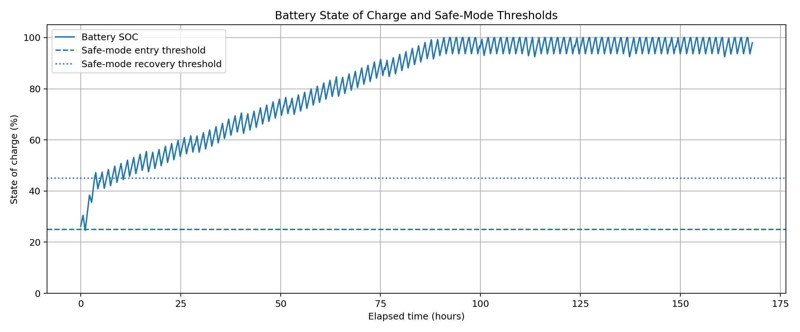
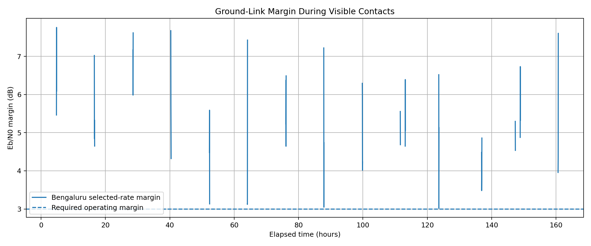
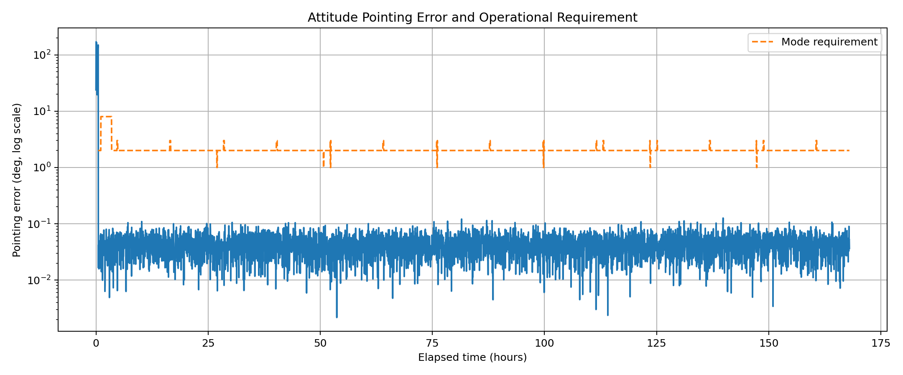
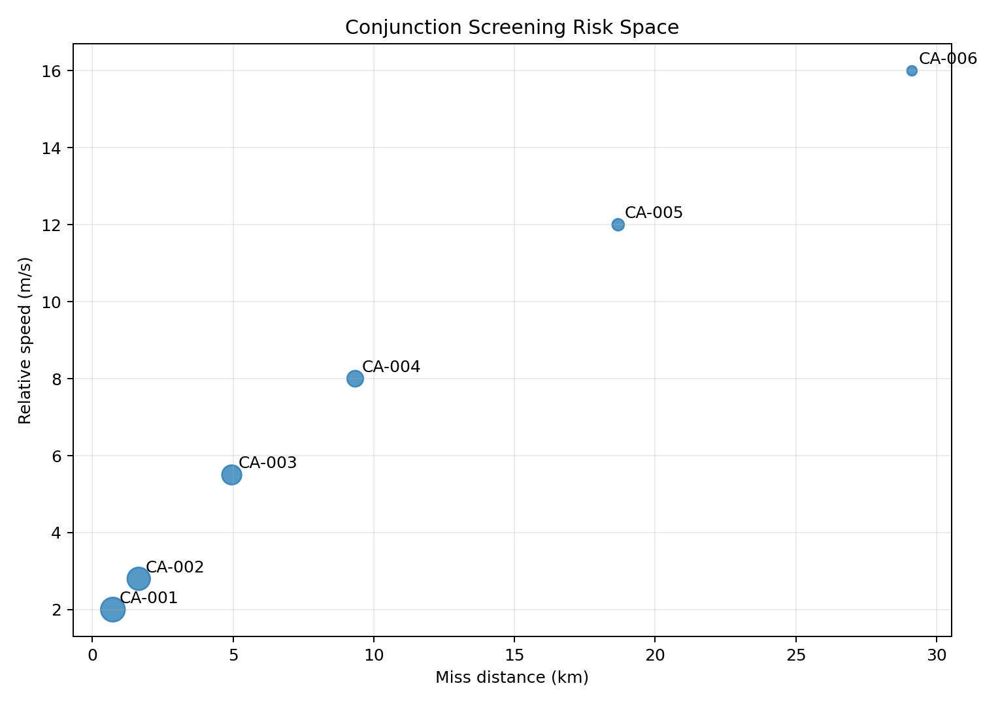
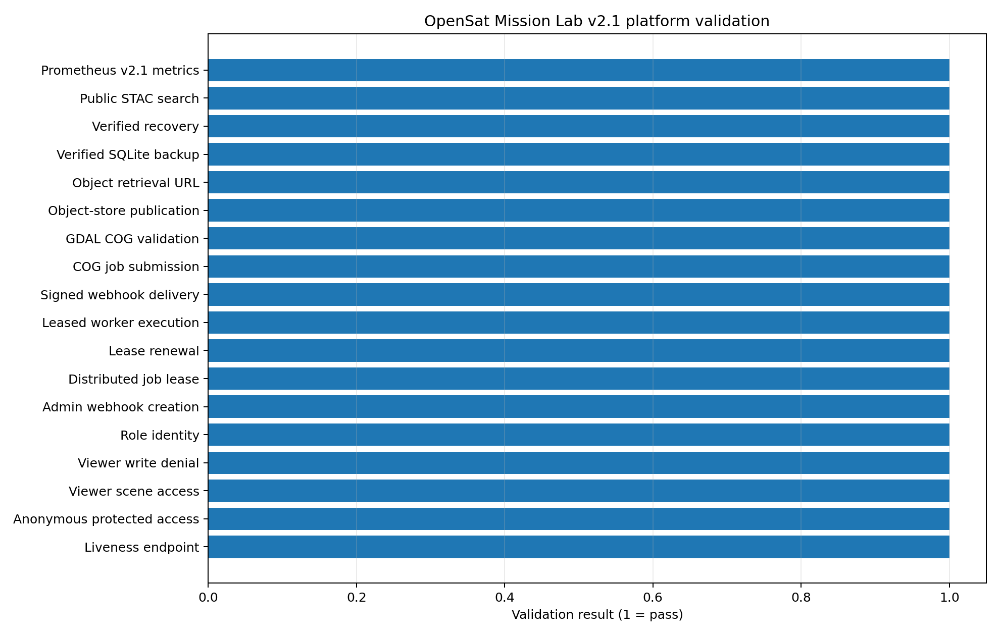
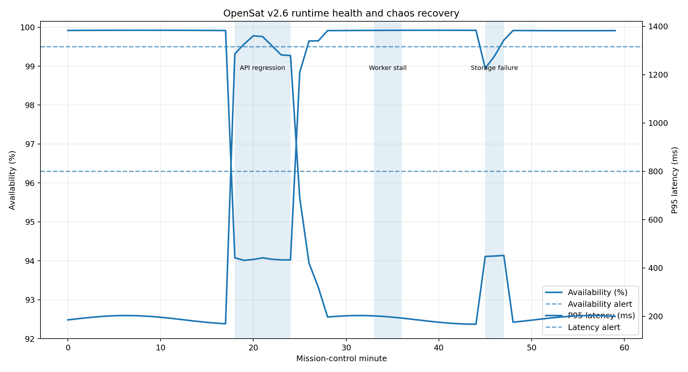
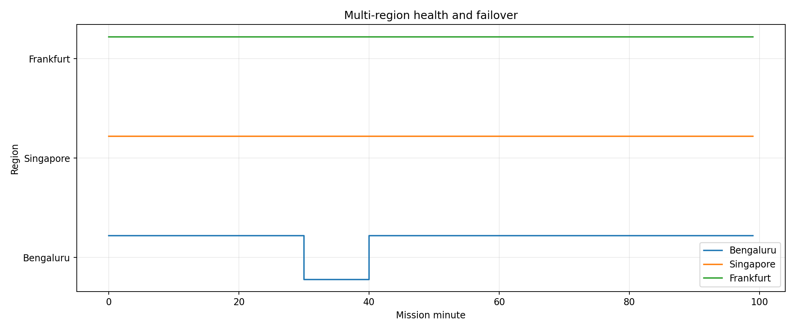
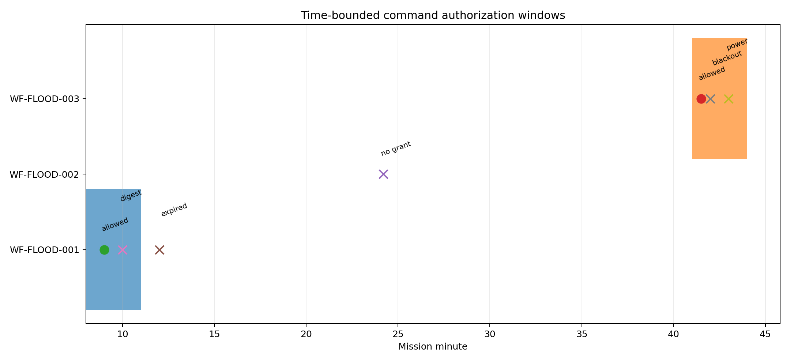
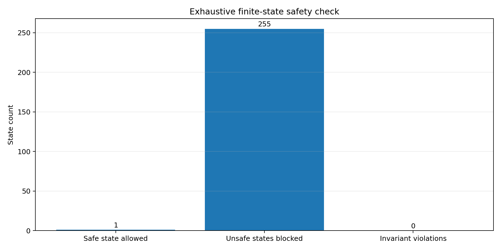
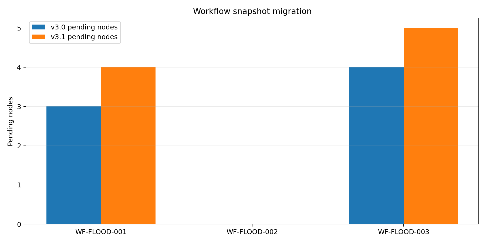

Orbital ground track
J2-aware Earth-fixed mission geometry.
The repository generates charts, CSVs, JSON evidence, reports and interactive dashboards. These are selected outputs from the verified v3.1 package.
Select any figure to inspect it at full resolution.
J2-aware Earth-fixed mission geometry.

Power generation, eclipse discharge and safe-mode recovery.

Pass-by-pass link analysis and adaptive rates.

Mode-specific pointing accuracy and wheel control.

Four-spacecraft coordinated mission geometry.

Screened close approaches and risk classification.

Calibrated EO indices and flood classification.

Multi-date optical/SAR progression analysis.

Integrated API, worker, storage and governance checks.

SLOs, incidents, chaos experiments and recovery.

Regional health and deterministic failover.

Cryptographic approval verification.

Time-bounded command grants and blocked misuse.

Exhaustive command-gate invariant checking.

Version migration preserving workflow state.
These static HTML dashboards are copied directly from the project outputs and work on GitHub Pages.
Telemetry, alarms, passes and command planning.
↗Requirements, benchmarks and acceptance evidence.
↗Coverage, links and coordinated scheduling.
↗Conjunction screening and autonomous replanning.
↗FMEA, Monte Carlo, fault trees and anomalies.
↗Spectral products and ground-truth metrics.
↗Optical/SAR change detection.
↗Explainable onboard decisions.
↗API, worker and storage validation.
↗SLOs, chaos and recovery evidence.
↗Workflow DAG, approvals and compensation.
↗Signed approvals and invariants.